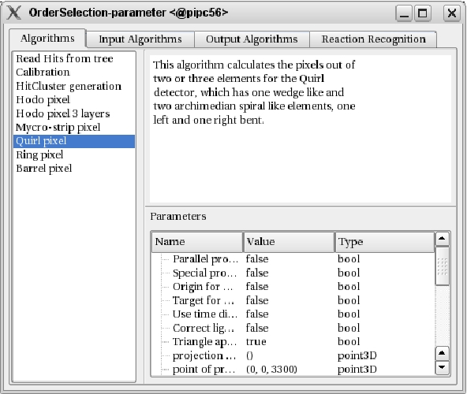

This work is licensed under a cc by-nc-sa 3.0 Unported License unless marked otherwise.
|
The AlgorithmOrderWidget gives you the possibility to select the order in which the algorithms should be executed for one given event. Certainly the reading should be done before the processing of the data, but since the program doesn't distinguish between different algorithms, the user has to specify the sorting of the algorithms himself. Selected algorithms can be moved up by pressing the "u"-Key, moved down with the "n"-Key or removed (unselected) by pressing the "d"-Key. The individual parameters of the algorithms can also be altered at this step. |  |
|
This work is licensed under a cc by-nc-sa 3.0 Unported License unless marked otherwise. |